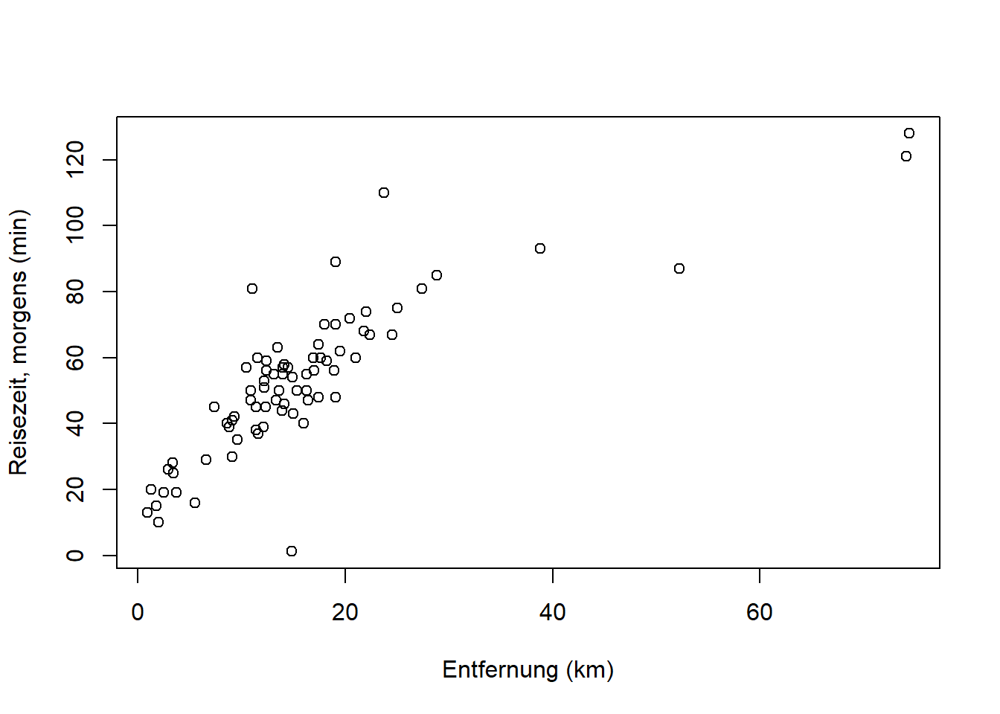
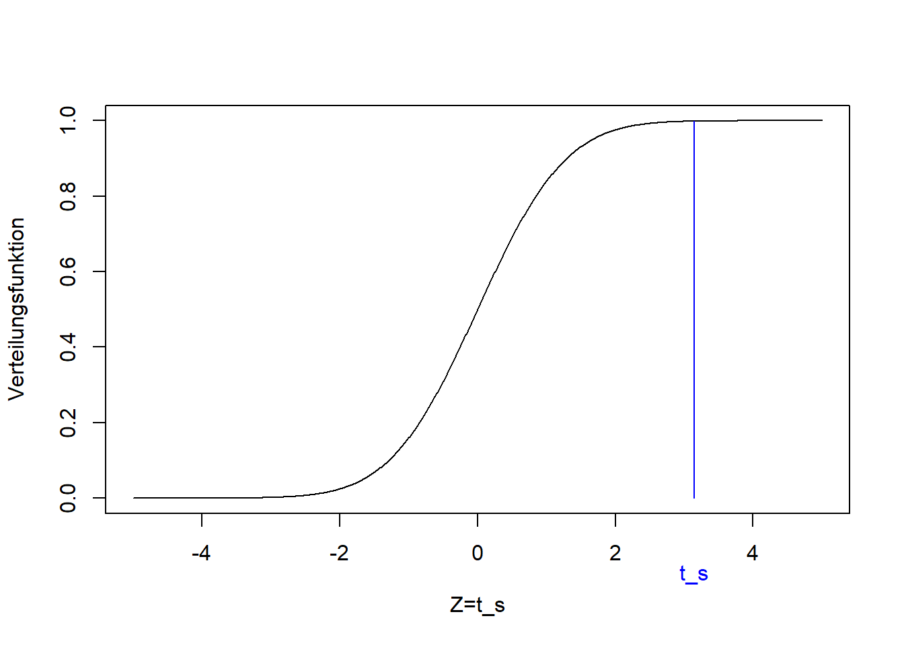
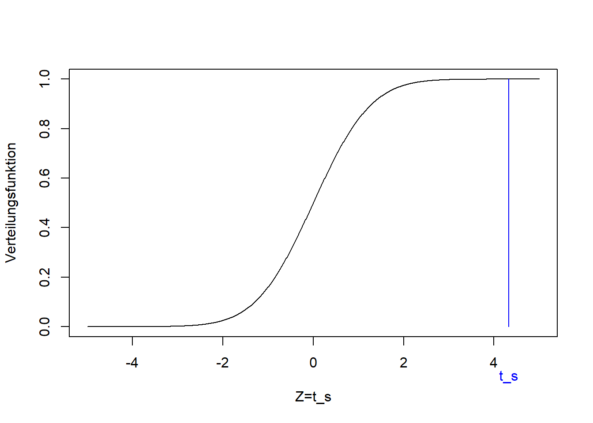
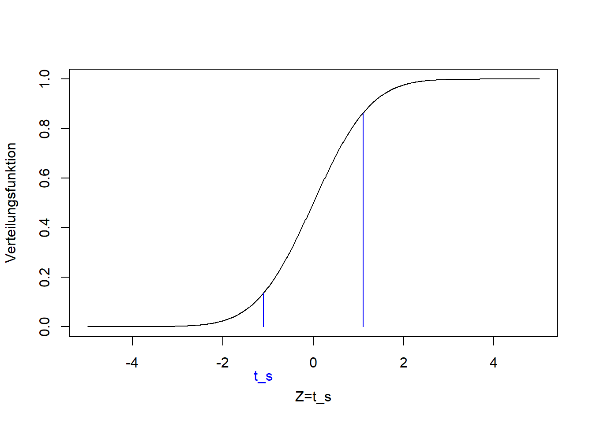

Kapitel 12 Lineare Regression
Für die lineare Regression kehren wir zu einer Frage aus Kapitel 5 zurück: Kann man die Entfernung zu Ihrem Wohnort mit der Anzahl Stationen, die Sie bis Adlershof brauchen statistisch vorhersagen?

Wir erinnern uns, dass der Korrelationskoeffizient nach Bravais-Pearson aus Kapitel 5 0.81 war. Das Ziel ist nun, eine Gerade durch die Punktwolke zu legen, die den Trend beschreibt, so dass der Abstand der Punkte von der Geraden minimal ist.
Es geht um 2 Variablen (Merkmale):
- die abhängige Variable \(y\) (im Bsp. Entfernung)
- die unabhängige Variable \(x\) (im Bsp. Anzahl Stationen)
Die Variablen müssen metrisch skaliert sein.10 Wir wollen das generelle Verhalten von \(y\) mit \(x\) beschreiben. Eine Gerade stellt dabei das einfachste lineare Modell dar.
12.1 Definitionen
Im Falle einer einzigen unabhängigen Variable lautet die Gleichung des linearen Models:
\[\begin{equation} y_i = \beta_0 + \beta_1 \cdot x_i + \epsilon_i \quad \text{mit} \quad i=1,2,\ldots,n \tag{12.1} \end{equation}\]
\(y_i\) bezeichnet den Wert der abhängigen Variable für Datenpunkt \(i\), und \(x_i\) den Wert der unabhängigen Variable für Datenpunkt \(i\). Der Parameter \(\beta_0\) beschreibt den Achsenabschnitt der Geraden, also der Punkt an dem die Gerade die y-Achse schneidet. Der Parameter \(\beta_1\) beschreibt die Steigung der Geraden. \(\epsilon_i\) stellt das Residuum (also den Fehler) für Datenpunkt \(i\) dar (Abbildung 12.1).

Abbildung 12.1: Lineare Regression: Definitionen.
12.2 Beschreibung vs. Vorhersage
Der primäre Zweck einer Regressionsanalyse ist die Beschreibung (oder Erklärung) der Daten im Sinne einer allgemeinen Beziehung, die sich auf die Grundgesamtheit übertragen lässt, aus der diese Daten entnommen wurden. Da diese Beziehung eine Eigenschaft der Grundgesamtheit ist, sollte diese demnach auch Vorhersagen ermöglichen. Hierbei ist jedoch Vorsicht geboten. Betrachten Sie den Zusammenhang von Jahr und Weltrekordzeit für die in Abbildung 12.2 dargestellten Daten (Meile, Herren). Wenn, wie hier, die Zeit die unabhängige Variable ist, wird die Regression zu einer Form der Trendanalyse, die in diesem Fall eine Verringerung der Rekordzeit mit den Jahren anzeigt. (Die lm() Funktion und ihren Output werden wir weiter unten kennenlernen, hier geht es um die Grafiken.)
# Daten laden
mile <- read.csv("https://raw.githubusercontent.com/avehtari/ROS-Examples/master/Mile/data/mile.csv", header=TRUE)
# lineares Modell an Daten aus 1. Hälfte des 20. Jahrh. anpassen
mile_fit1 <- lm(seconds ~ year, data = mile[mile$year<1950,])
# Informationen zu Parameterschätzern extrahieren
coef(summary(mile_fit1))## Estimate Std. Error t value Pr(>|t|)
## (Intercept) 912.2340 67.90140 13.435 3.615e-08
## year -0.3439 0.03509 -9.798 9.059e-07# lineares Modell an kompletten Datensatz anpassen
mile_fit2 <- lm(seconds ~ year, data = mile)
coef(summary(mile_fit2))## Estimate Std. Error t value Pr(>|t|)
## (Intercept) 1006.876 21.532 46.76 1.361e-29
## year -0.393 0.011 -35.73 3.780e-26# Modellanpassung für 1. Hälfte des 20. Jahrh. plotten
plot(mile$year[mile$year<1950], mile$seconds[mile$year<1950],
xlim = c(1900, 2000), ylim = c(200, 260),
pch = 19, type = 'p',
xlab = "Jahr", ylab = "Weltrekord, Meile, Herren (Sekunden)")
abline(coef(mile_fit1), lwd = 3, col = "red")
# Extrapolation für 2. Hälfte des 20. Jahrh. plotten
plot(mile$year, mile$seconds,
xlim = c(1900, 2000), ylim = c(200, 260),
pch = 19, type = 'p',
xlab = "Jahr", ylab = "Weltrekord, Meile, Herren (Sekunden)")
abline(coef(mile_fit1), lwd = 3, col = "red")
# Modellanpassung für Gesamtdaten bis 2050 plotten
plot(mile$year, mile$seconds,
xlim = c(1900, 2050), ylim = c(200, 260),
pch = 19, type = 'p',
xlab = "Jahr", ylab = "Weltrekord, Meile, Herren (Sekunden)")
abline(coef(mile_fit2), lwd = 3, col = "red")


Abbildung 12.2: Links: Trend des Weltrekords “Meile, Herren” in der ersten Hälfte des 20. Jahrhunderts (Beschreibung). Mitte: Extrapolation des Trends für die zweite Hälfte des 20. Jahrhunderts (Vorhersage). Rechts: Extrapolation des Trends bis zum Jahr 2050 (längere Vorhersage). Nach: Wainer (2009)
Wir sehen, dass sich der Weltrekord in der ersten Hälfte des 20. Jahrhunderts linear verbesserte (Abbildung 12.2, links). Dieser Trend passt auch für die zweite Hälfte des 20. Jahrhunderts bemerkenswert gut (Abbildung 12.2, Mitte). Wie lange kann sich der Weltrekord jedoch noch mit der gleichen Rate verbessern (Abbildung 12.2, rechts)?
Dieses Beispiel zeigt deutlich die Anwendbarkeit von Regressionen für Vorhersagen innerhalb bestimmter Grenzen, zeigt jedoch gleichzeitig die Grenzen dieser einfachen Modelle für längere Vorhersagen (z.B. in Zeit und Raum). Im Falle des Weltrekords würden wir erwarten, dass die Verbesserungsrate mit der Zeit abnimmt, d.h. dass die Kurve abflacht, was ein nichtlineares Modell erfordert.
12.3 Ausblick: Weiterführende lineare Modelle
Wenn wir über das lineare Modell sprechen, ist die abhängige Variable immer metrisch skaliert, während die unabhängigen Variablen metrisch, nominal/ordinal oder gemischt sein können. Im Prinzip kann jede dieser Varianten mathematisch gleich behandelt werden, d.h. alle können z.B. mit der lm() Funktion in R analysiert werden. Allerdings haben sich historisch gesehen unterschiedliche Bezeichnungen für diese Varianten etabliert, die hier erwähnt werden sollen, um Verwirrung zu vermeiden (Tabellen 12.1 und 12.2).
| unabhängige Variable(n) metrisch |
unabhängige Variable(n) nominal/ordinal |
unabhängige Variable(n) gemischt |
|---|---|---|
| Regression | Varianzanalyse (ANOVA) |
Kovarianzanalyse (ANCOVA) |
| 1 unabhängige Variable | >1 unabhängige Variable | |
|---|---|---|
| 1 abhängige Variable | Regression | Multiple Regression |
| >1 abhängige Variable | Multivariate Regression | Multivariate multiple Regression |
12.4 Lineare Regression
Wie soll nun die Gerade durch die Punktwolke gelegt werden, d.h. welche Werte sollen Achsenabschnitt \(\beta_0\) und Steigung \(\beta_1\) annehmen? Typischerweise werden Regressionsprobleme gelöst, indem die Summe der quadratischen Abweichungen zwischen der Regressionsgeraden und den Datenpunkten minimiert wird - die sogenannte Kleinste-Quadrate-Schätzung.
Die Summe der quadratischen Abweichungen wird auch als \(SSE\) bezeichnet (Sum of Squared Errors). Grafisch gesehen probieren wir in Abbildung 12.1 verschiedene Geraden mit unterschiedlichen Achsenabschnitten \(\beta_0\) und Steigungen \(\beta_1\) aus und wählen diejenige, bei der die Summe aller vertikalen Abstände \(\epsilon_i\) zum Quadrat am kleinsten ist. Mathematisch ist \(SSE\) definiert als:
\[\begin{equation} SSE=\sum_{i=1}^{n}\left(\epsilon_i\right)^2=\sum_{i=1}^{n}\left(y_i-\left(\beta_0+\beta_1 \cdot x_i\right)\right)^2 \tag{12.2} \end{equation}\]
Das Residuum \(\epsilon_i\) ist also gleich \(y_i-\left(\beta_0+\beta_1 \cdot x_i\right)\), dem vertikalen Abstand zwischen Datenpunkt und Regressionsgerade.
Im Fall der linearen Regression kann \(SSE\) analytisch minimiert werden, was z.B. bei nichtlinearen Modellen nicht der Fall ist. Analytisch finden wir das Minimum von \(SSE\) wo dessen partielle Ableitungen in Bezug auf die beiden Modellparameter beide Null sind: \(\frac{\partial SSE}{\partial \beta_0}=0\) und \(\frac{\partial SSE}{\partial \beta_1}=0\). Unter Anwendung der Definition von \(SEE\) aus Gleichung (12.2) und der Summenregel11 und der Kettenregel12, die Sie noch aus der Schule kennen werden, erhalten wir:
\[\begin{equation} \frac{\partial SSE}{\partial \beta_0}=-2 \cdot \sum_{i=1}^{n}\left(y_i-\beta_0-\beta_1 \cdot x_i\right)=0 \tag{12.3} \end{equation}\] \[\begin{equation} \frac{\partial SSE}{\partial \beta_1}=-2 \cdot \sum_{i=1}^{n}x_i \cdot \left(y_i-\beta_0-\beta_1 \cdot x_i\right)=0 \tag{12.4} \end{equation}\]
Gleichungen (12.3) und (12.4) bilden ein Gleichungssystem mit zwei Gleichungen und zwei Unbekannten, das wir eindeutig lösen können. Zuerst lösen wir Gleichung (12.3) nach \(\beta_0\) auf (nachdem wir durch -2 geteilt haben):
\[\begin{equation} \sum_{i=1}^{n}y_i-n \cdot \beta_0-\beta_1 \cdot \sum_{i=1}^{n}x_i=0 \tag{12.5} \end{equation}\] \[\begin{equation} n \cdot \beta_0=\sum_{i=1}^{n}y_i-\beta_1 \cdot \sum_{i=1}^{n}x_i \tag{12.6} \end{equation}\] \[\begin{equation} \beta_0=\bar{y}-\beta_1 \cdot \bar{x} \tag{12.7} \end{equation}\]
Formal sind das jetzt Parameterschätzer (das “Dach”-Symbol bezeichnet Schätzer): \[\begin{equation} \hat\beta_0=\bar{y}-\hat\beta_1 \cdot \bar{x} \tag{12.8} \end{equation}\]
Sodann setzen wir Gleichung (12.8) in Gleichung (12.4) ein (nachdem wir durch -2 geteilt haben):
\[\begin{equation} \sum_{i=1}^{n}\left(x_i \cdot y_i-\beta_0 \cdot x_i-\beta_1 \cdot x_i^2\right)=0 \tag{12.9} \end{equation}\] \[\begin{equation} \sum_{i=1}^{n}\left(x_i \cdot y_i-\bar{y} \cdot x_i+\hat\beta_1 \cdot \bar{x} \cdot x_i-\hat\beta_1 \cdot x_i^2\right)=0 \tag{12.10} \end{equation}\]
Schließlich lösen wir Gleichung (12.10) nach \(\beta_1\) auf:
\[\begin{equation} \sum_{i=1}^{n}\left(x_i \cdot y_i-\bar{y} \cdot x_i\right)-\hat\beta_1 \cdot \sum_{i=1}^{n}\left(x_i^2-\bar{x} \cdot x_i\right)=0 \tag{12.11} \end{equation}\] \[\begin{equation} \hat\beta_1=\frac{\sum_{i=1}^{n}\left(x_i \cdot y_i-\bar{y} \cdot x_i\right)}{\sum_{i=1}^{n}\left(x_i^2-\bar{x} \cdot x_i\right)} \tag{12.12} \end{equation}\]
Über eine Reihe von Schritten, die ich hier überspringe, erhalten wir:
\[\begin{equation} \hat\beta_1=\frac{SSXY}{SSX} \tag{12.13} \end{equation}\]
\(SSX=\sum_{i=1}^{n}\left(x_i-\bar{x}\right)^2\) ist ein Maß für die Varianz der Daten in \(x\)-Richtung. \(SSXY=\sum_{i=1}^{n}\left(x_i-\bar{x}\right) \cdot \left(y_i-\bar{y}\right)\) ist ein Maß für die Kovarianz der Daten. Es gibt auch \(SSY=\sum_{i=1}^{n}\left(y_i-\bar{y}\right)^2\), das entsprechend ein Maß für die Varianz der Daten in \(y\)-Richtung ist. Gleichung (12.13) ist eine exakte Lösung für \(\hat\beta_1\).
Wir setzen nun Gleichung (12.13) in Gleichung (12.8) ein und haben eine exakte Lösung für \(\hat\beta_0\). Berechnen wir nun die Parameter für unsere Reisedaten mit der lm() Funktion:
# lineare Regression der Reisedaten
reise_fit <- lm(distanz ~ stationen, data = reisedat)
# Informationen über geschätzte Parameterwerte ausgeben
coef(summary(reise_fit))## Estimate Std. Error t value Pr(>|t|)
## (Intercept) 4.9232 1.01874 4.833 7.533e-06
## stationen 0.6934 0.05976 11.604 4.641e-18In der ersten Spalte (“Estimate”) dieses Outputs finden Sie die Werte der Parameterschätzer, wobei “(Intercept)” für \(\beta_0\) steht und “stationen” für \(\beta_1\). Anhand von \(\beta_1\) können wir ablesen, dass die Entfernung zwischen zwei Stationen im Mittel 0.7km beträgt. Der Achsenabschnitt \(\beta_0\) hat keine direkte Entsprechung.13 Auf die anderen Spalten werden wir weiter unten zu sprechen kommen. Plotten wir nun die so ermittelte Regressionsgerade \(y_i=4.9+0.7\cdot x_i+\epsilon_i\):
# Modellanpassung plotten
plot(reisedat$stationen, reisedat$distanz,
pch = 19, type = 'p',
xlab = "Anzahl Stationen", ylab = "Entfernung (km)")
abline(coef(reise_fit), lwd = 3, col = "red")
12.5 Signifikanz der Regression
Nun, dass wir Werte für die Regressionsparameter haben, müssen wir uns fragen, ob diese Werte statistisch signifikant sind oder ob sie durch Zufall aus dem (angenommenen) Zufallsprozess der Stichprobenziehung entstanden sein könnten. Dazu testen wir formal, ob die vom Modell erklärte Varianz in den Daten signifikant größer als die nicht erklärte Varianz ist. Das ist ein F-Test-Problem, das wir über die sogenannte Varianzanalyse (ANOVA) angehen. ANOVA beginnt mit der Erstellung der ANOVA-Tabelle (Tabelle 12.3). Dies geschieht in R im Hintergrund und wird selten explizit betrachtet; tun wir es hier aber trotzdem, damit wir verstehen was passiert.
| Varianz- quelle |
Quadrat- summe |
Freiheits- grad (\(df\)) |
Varianz | F-Statistik (\(F_s\)) | p-Wert |
|---|---|---|---|---|---|
| Regression | \(SSR=\\SSY-SSE\) | \(1\) | \(\frac{SSR}{df_{SSR}}\) | \(\frac{\frac{SSR}{df_{SSR}}}{s^2}\) | \(1-F\left(F_s,1,n-2\right)\) |
| Fehler | \(SSE\) | \(n-2\) | \(\frac{SSE}{df_{SSE}}=s^2\) | ||
| Gesamt | \(SSY\) | \(n-1\) |
Schauen wir uns zunächst die zweiten Spalte der Tabelle 12.3 an: \(SSY=\sum_{i=1}^{n}\left(y_i-\bar{y}\right)^2\) ist ein Maß für die Gesamtvarianz der Daten (in \(y\)-Richtung), d.h. wie stark die Datenpunkte um den Gesamtmittelwert streuen (Abbildung 12.3, links). \(SSE=\sum_{i=1}^{n}\left(\epsilon_i\right)^2=\sum_{i=1}^{n}\left(y_i-\left(\beta_0+\beta_1 \cdot x_i\right)\right)^2\) ist ein Maß für die Fehlervarianz, d.h. wie stark die Datenpunkte um die Regressionsgerade streuen (Abbildung 12.3, rechts). Das ist die Varianz, die nach der Modellanpassung übrig ist (“nicht erklärt”). \(SSR=SSY-SSE\) ist folglich ein Maß für die vom Modell erklärte Varianz.


Abbildung 12.3: Variation der Datenpunkte um den Mittelwert, zusammengefasst durch \(SSY\) (links), und um die Regressionsgerade, zusammengefasst durch \(SSE\) (rechts).
In der dritten Spalte der Tabelle 12.3 stehen die Freiheitsgrade der drei Varianzterme. Diese können als Anzahl der Werte in einer Stichprobe, die für die Berechnung der jeweiligen Parameter frei zur Verfügung stehen, verstanden werden (vgl. Kapitel 4): In die Berechnung von \(SSY\) geht \(\bar y\) ein, für dessen Berechnung die Werte der Stichprobe bereits einmal verwendet wurden; dadurch ist die Anzahl Freiheitsgrade \(df_{SSY}=n-1\). In die Berechnung von \(SSE\) gehen \(\beta_0\) und \(\beta_1\) ein (Gleichung (12.2)), d.h. die Anzahl Freiheitsgrade ist \(df_{SSE}=n-2\). Für \(SSR\) gilt dann einfach \(df_{SSR}=df_{SSY}-df_{SSE}=1\). Die Freiheitsgrade werden verwendet, um die Varianzterme in der vierten Spalte der Tabelle 12.3 zu normalisieren, wobei \(s^2\) Fehlervarianz genannt wird.
In der fünften Spalte der Tabelle 12.3 finden wir das Verhältnis von zwei Varianzen; Regressionsvarianz über Fehlervarianz. Von einer signifikanten Regression erwarten wir, dass die (durch das Modell erklärte) Regressionsvarianz viel größer ist als die (durch das Modell nicht erklärte) Fehlervarianz. Dies ist ein F-Test Problem, bei dem getestet wird, ob sich die durch das Modell erklärte Varianz signifikant von der durch das Modell nicht erklärten Varianz unterscheidet. Das Verhältnis der beiden Varianzen dient als F-Statistik \(F_s\).
Die sechste Spalte der Tabelle 12.3 gibt dann den p-Wert des F-Tests an, d.h. die Wahrscheinlichkeit, \(F_s\) oder einen größeren Wert (d.h. ein noch besseres Modell) zufällig zu erhalten, wenn die Nullhypothese \(H_0\) wahr ist (vgl. Kapitel 10). Im Fall der linearen Regression ist \(H_0:\frac{SSR}{df_{SSR}}=s^2\), d.h. die beiden Varianzen sind gleich, und \(H_1:\frac{SSR}{df_{SSR}}>s^2\), d.h. die erklärte Varianz ist größer als die nicht erklärte.
Wie in Kapitel 10 bereits diskutiert folgt \(F_s\) einer F-Verteilung mit den Parametern \(1\) und \(n-2\) unter der Nullhypothese (Abbildung 12.4). Die rote Linie in Abbildung 12.4 markiert einen bestimmten Wert von \(F_s\) (hier zwischen 10 und 11) und den entsprechenden Wert der Verteilungsfunktion der F-Verteilung (\(F\left(F_s,1,n-2\right)\)). Der p-Wert ist \(\Pr\left(Z> F_s\right)=1-F\left(F_s,1,n-2\right)\) und beschreibt die Wahrscheinlichkeit, dieses oder ein größeres Varianzverhältnis zufällig (aufgrund der zufälligen Stichprobenziehung) zu erhalten, selbst wenn die beiden Varianzen tatsächlich gleich sind.
Abbildung 12.4: Verteilungsfunktion der F-Verteilung der F-Statistik \(F_s\). Rot: Bestimmter Wert für \(F_s\) und entsprechender Wert der Verteilungsfunktion.
Für die Regression der Reisedaten ist der p-Wert wesentlich kleiner als das konventionelle Signifikanzniveau \(\alpha=0.01\), daher lehnen wir die die Nullhypothese ab und bezeichnen die Regression als statistisch signifikant. Schauen wir uns die ANOVA-Tabelle fuer das Beispiel an:
## Analysis of Variance Table
##
## Response: distanz
## Df Sum Sq Mean Sq F value Pr(>F)
## stationen 1 3309 3309 135 <2e-16 ***
## Residuals 71 1745 25
## ---
## Signif. codes:
## 0 '***' 0.001 '**' 0.01 '*' 0.05 '.' 0.1 ' ' 1Im Vergleich zu Tabelle 12.3 lässt R die letzte Zeile (\(SSY\)) weg und tauscht die Spalten “Quadratsumme” und “Freiheitsgrad”.
12.6 Konfidenzintervalle und Signifikanz der Parameter
Da die Modellanpassung nicht perfekt ist, haben die Parameterschätzer Standardfehler, d.h. sie werden wie andere statistische Kennzahlen als Realisationen eines Zufallsprozesses interpretiert. Das führt uns zu Konfidenzintervallen und t-Tests auf Signifikanz der einzelnen Parameter.
Der Standardfehlern für \(\hat\beta_0\) ist: \[\begin{equation} s_{\hat\beta_0}=\sqrt{\frac{\sum_{i=1}^{n}x_i^2}{n} \cdot \frac{s^2}{SSX}} \tag{12.14} \end{equation}\]
Wenn wir diese Formel in ihre einzelnen Teile zerlegen, sehen wir: Je mehr Datenpunkte \(n\) wir haben, desto kleiner ist der Standardfehler, d.h. desto mehr Vertrauen haben wir in die Schätzung. Außerdem gilt, je größer die Variation in \(x\) (\(SSX\)), desto kleiner der Standardfehler. Beide Effekte machen intuitiv Sinn: Je mehr Datenpunkte wir haben und je mehr Ausprägungen von \(x\) wir abgedeckt haben, desto sicherer können wir sein, dass unsere Stichprobe repräsentativ für die Grundgesamtheit ist. Umgekehrt gilt: Je größer die Fehlervarianz \(s^2\), d.h. je kleiner die Erklärungskraft unseres Modells, desto größer der Standardfehler. Und je mehr \(x\)-Datenpunkte von Null entfernt sind, d.h. je größer \(\sum_{i=1}^{n}x_i^2\), desto geringer ist unser Vertrauen in den Achsenabschnitt (wo \(x=0\) ist) und damit steigt der Standardfehler.
Der Standardfehler für \(\hat\beta_1\) ist: \[\begin{equation} s_{\hat\beta_1}=\sqrt{\frac{s^2}{SSX}} \tag{12.15} \end{equation}\] Hier gilt die gleiche Interpretation wie zuvor, außer dass es keinen Einfluss der Größe der \(x\)-Datenpunkte gibt.
Wir können auch einen Standardfehler für neue Vorhersagen \(\hat y\) für gegebene \(\hat x\) festlegen: \[\begin{equation} s_{\hat y}=\sqrt{s^2 \cdot \left(\frac{1}{n}+\frac{\left(\hat x-\bar x\right)^2}{SSX}\right)} \tag{12.16} \end{equation}\]
Dieselbe Interpretation gilt auch hier, nur dass jetzt ein zusätzlicher Term \(\left(\hat x-\bar x\right)^2\) auftaucht, der besagt, je weiter der neue \(x\)-Wert vom Zentrum der ursprünglichen Daten (den Trainings- oder Kalibrierungsdaten) entfernt ist, desto größer ist der Standardfehler der neuen Vorhersage, d.h. desto geringer ist die Zuversicht, dass sie korrekt ist.
Anmerkung: Die Formeln für die Standardfehler ergeben sich aus den grundlegenden Annahmen der linearen Regression, auf die wir weiter unten eingehen werden. Die mathematische Herleitung lassen wir hier aus.
Aus den Standardfehlern können wir Konfidenzintervalle für die Parameterschätzer wie folgt berechnen: \[\begin{equation} \Pr\left(\hat\beta_0-t_{n-2;0.975} \cdot s_{\hat\beta_0}\leq \beta_0\leq \hat\beta_0+t_{n-2;0.975} \cdot s_{\hat\beta_0}\right)=0.95 \tag{12.17} \end{equation}\]
Gleichung (12.17) ist das zentrale 95%-Konfidenzintervall, in dem der wahre Parameterwert, hier \(\beta_0\), mit einer Wahrscheinlichkeit von 0.95 liegt. Vgl. Konfidenzintervall des Mittelwertschätzers (Kapitel 8).
Wir können das Intervall auch wie folgt schreiben: \[\begin{equation} KI=\left[\hat\beta_0-t_{n-2;0.975} \cdot s_{\hat\beta_0};\hat\beta_0+t_{n-2;0.975} \cdot s_{\hat\beta_0}\right] \tag{12.18} \end{equation}\]
Wie bei dem Konfidenzintervall des Mittelwertschätzers (Kapitel 8) liegt das Konfidenzintervall symmetrisch um den Parameterschätzwert \(\hat\beta_0\) und ergibt sich aus einer t-Verteilung mit dem Parameter \(n-2\), deren Breite durch den Standardfehler \(s_{\hat\beta_0}\) moduliert wird. Erinnern Sie sich, dass die Breite der t-Verteilung ebenfalls durch den Stichprobenumfang kontrolliert wird und mit zunehmendem \(n\) immer schmaler wird.
Die gleichen Formeln gelten für \(\beta_1\) und \(y\): \[\begin{equation} \Pr\left(\hat\beta_1-t_{n-2;0.975} \cdot s_{\hat\beta_1}\leq \beta_1\leq \hat\beta_1+t_{n-2;0.975} \cdot s_{\hat\beta_1}\right)=0.95 \tag{12.19} \end{equation}\] \[\begin{equation} \Pr\left(\hat y-t_{n-2;0.975} \cdot s_{\hat y}\leq y\leq \hat y+t_{n-2;0.975} \cdot s_{\hat y}\right)=0.95 \tag{12.20} \end{equation}\]
Die Formeln für die Konfidenzintervalle (Gleichungen (12.17), (12.19) und (12.20)) ergeben sich aus den Grundannahmen der linearen Regression (vgl. Kapitel 8): Die Residuen sind unabhängig identisch verteilt (u.i.v.) gemäß einer Normalverteilung, d.h. \(\epsilon_i\sim N(0,\sigma)\), und das lineare Modell ist korrekt. Dann lässt sich mathematisch zeigen, dass \(\frac{\hat\beta_0-\beta_0}{s_{\hat\beta_0}}\), \(\frac{\hat\beta_1-\beta_1}{s_{\hat\beta_1}}\) und \(\frac{\hat y-y}{s_{\hat y}}\) \(t_{n-2}\)-verteilt sind (t-Verteilung mit \(n-2\) Freiheitsgraden).
Da das zentrale 95%-Konfidenzintervall einer \(t_{n-2}\)-verteilten Zufallsvariablen \(Z\) \(\Pr\left(-t_{n-2;0.975}\leq Z\leq t_{n-2;0. 975}\right)=0.95\) ist (Abbildung 12.5), können wir jeden der oben genannten drei Terme für \(Z\) einsetzen und die Ungleichung umstellen, um zu den Gleichungen (12.17), (12.19) und (12.20) zu gelangen.
![Links: Dichtefunktion einer t-verteilten Zufallsvariablen $Z$, wobei das zentrale 95%-Konfidenzintervall rot markiert ist. 95% der Dichtefunktion liegen zwischen den beiden Grenzen, 2.5% liegen links von der unteren Grenze und 2.5% rechts von der oberen Grenze. Rechts: Verteilungsfunktion der gleichen t-verteilten Zufallsvariablen $Z$. Die obere Grenze des 95%-Konfidenzintervalls ist als $t_{n-2;0.975}$ definiert, d.h. das 0.975-Perzentil der Verteilung, während die untere Grenze als $t_{n-2;0.025}$ definiert ist, was aufgrund der Symmetrie der Verteilung $-t_{n-2;0.975}$ entspricht.](figs/pdf_t.jpg)
![Links: Dichtefunktion einer t-verteilten Zufallsvariablen $Z$, wobei das zentrale 95%-Konfidenzintervall rot markiert ist. 95% der Dichtefunktion liegen zwischen den beiden Grenzen, 2.5% liegen links von der unteren Grenze und 2.5% rechts von der oberen Grenze. Rechts: Verteilungsfunktion der gleichen t-verteilten Zufallsvariablen $Z$. Die obere Grenze des 95%-Konfidenzintervalls ist als $t_{n-2;0.975}$ definiert, d.h. das 0.975-Perzentil der Verteilung, während die untere Grenze als $t_{n-2;0.025}$ definiert ist, was aufgrund der Symmetrie der Verteilung $-t_{n-2;0.975}$ entspricht.](figs/cdf_t.jpg)
Abbildung 12.5: Links: Dichtefunktion einer t-verteilten Zufallsvariablen \(Z\), wobei das zentrale 95%-Konfidenzintervall rot markiert ist. 95% der Dichtefunktion liegen zwischen den beiden Grenzen, 2.5% liegen links von der unteren Grenze und 2.5% rechts von der oberen Grenze. Rechts: Verteilungsfunktion der gleichen t-verteilten Zufallsvariablen \(Z\). Die obere Grenze des 95%-Konfidenzintervalls ist als \(t_{n-2;0.975}\) definiert, d.h. das 0.975-Perzentil der Verteilung, während die untere Grenze als \(t_{n-2;0.025}\) definiert ist, was aufgrund der Symmetrie der Verteilung \(-t_{n-2;0.975}\) entspricht.
Die Signifikanz der Parameterschätzer wird mit Hilfe eines t-Tests ermittelt (vgl. Kapitel 9 und 10). Die Nullhypothese ist, dass die wahren Parameterwerte gleich Null sind, d.h. die Parameterschätzer nicht signifikant sind: \[\begin{equation} H_0:\beta_0=0 \tag{12.21} \end{equation}\] \[\begin{equation} H_0:\beta_1=0 \tag{12.22} \end{equation}\]
Diese Hypothese wird gegen die Alternativhypothese getestet, dass die wahren Parameterwerte ungleich Null sind, d.h. dass die Parameterschätzer signifikant sind: \[\begin{equation} H_1:\beta_0\neq 0 \tag{12.23} \end{equation}\] \[\begin{equation} H_1:\beta_1\neq 0 \tag{12.24} \end{equation}\]
Die Teststatistiken sind: \[\begin{equation} t_s=\frac{\hat\beta_0-0}{s_{\hat\beta_0}}\sim t_{n-2} \tag{12.25} \end{equation}\] \[\begin{equation} t_s=\frac{\hat\beta_1-0}{s_{\hat\beta_1}}\sim t_{n-2} \tag{12.26} \end{equation}\]
Das “Tilde”-Symbol (\(\sim\)) bedeutet, dass die Teststatistik einer bestimmten Verteilung folgt, hier der t-Verteilung. Dies ergibt sich wiederum aus den oben erwähnten Regressionsannahmen. Die Annahmen sind die gleichen wie beim üblichen t-Test der Mittelwerte (Kapitel 9 und 10), außer dass im Fall der linearen Regression die Residuen als u.i.v. normal angenommen werden, während im Fall der Mittelwerte die tatsächlichen Datenpunkte \(y\) als u.i.v. normal angenommen werden.
Analog zum üblichen 2-seitigen t-Test ist der p-Wert definiert als: \[\begin{equation} 2 \cdot \Pr\left(t>|t_s|\right)=2 \cdot \left(1-F_t\left(|t_s|\right)\right) \tag{12.27} \end{equation}\]
Das Symbol \(F_t\left(|t_s|\right)\) bezeichnet den Wert der kumulativen Verteilungsfunktion der t-Verteilung an der Stelle des absoluten Wertes der Teststatistik (\(|t_s|\), Abbildung 12.6). Mit einem Signifikanzniveau von z.B. \(\alpha=0.01\) gelangen wir zu einem kritischen Wert der Teststatistik \(t_c=t_{n-2;0.995}\), bei dessen Überschreitung wir die Nullhypothese ablehnen und die Parameterschätzer als signifikant bezeichnen (Abbildung 12.6).
![Schema des t-Tests auf Signifikanz der Parameterschätzer. Die Teststatistik folgt einer t-Verteilung unter der Nullhypothese. Der tatsächliche Wert der Teststatistik $t_s$ ist blau markiert und wird für den 2-seitigen Test bei Null gespiegelt. Der kritische Wert der Teststatistik $t_c$, den wir von einem Signifikanzniveau von $\alpha=0.01$ erhalten, ist rot markiert; auch dieser wird für den 2-seitigen Test gespiegelt. Wir lehnen die Nullhypothese ab, wenn $|t_s|>t_c$, d.h. für Werte von $t_s$ kleiner als $-t_c$ und größer als $t_c$, und nennen diese Parameterschätzer dann signifikant. Wir behalten die Nullhypothese bei wenn $|t_s|\leq t_c$, d.h. für Werte von $t_s$ zwischen $-t_c$ und $t_c$, und nennen diesen Parameterschätzer dann (vorläufig) nicht signifikant. In dem gezeigten Beispiel ist der Parameterschätzer nicht signifikant.](figs/tc.jpg)
Abbildung 12.6: Schema des t-Tests auf Signifikanz der Parameterschätzer. Die Teststatistik folgt einer t-Verteilung unter der Nullhypothese. Der tatsächliche Wert der Teststatistik \(t_s\) ist blau markiert und wird für den 2-seitigen Test bei Null gespiegelt. Der kritische Wert der Teststatistik \(t_c\), den wir von einem Signifikanzniveau von \(\alpha=0.01\) erhalten, ist rot markiert; auch dieser wird für den 2-seitigen Test gespiegelt. Wir lehnen die Nullhypothese ab, wenn \(|t_s|>t_c\), d.h. für Werte von \(t_s\) kleiner als \(-t_c\) und größer als \(t_c\), und nennen diese Parameterschätzer dann signifikant. Wir behalten die Nullhypothese bei wenn \(|t_s|\leq t_c\), d.h. für Werte von \(t_s\) zwischen \(-t_c\) und \(t_c\), und nennen diesen Parameterschätzer dann (vorläufig) nicht signifikant. In dem gezeigten Beispiel ist der Parameterschätzer nicht signifikant.
Jetzt verstehen wir auch die restlichen Informationen des Outputs der lm() Funktion (s. oben):
## Estimate Std. Error t value Pr(>|t|)
## (Intercept) 4.9232 1.01874 4.833 7.533e-06
## stationen 0.6934 0.05976 11.604 4.641e-18Wie bereits oben erwähnt steht die Zeile “(Intercept)” für \(\beta_0\) und die Zeile “stationen” für \(\beta_1\). In Spalte “Estimate” stehen die Werte der Parameterschätzer. In Spalte “Std. Error” stehen deren Standardfehler (Gleichungen (12.14) und (12.15)). In Spalte “t value” stehen die entsprechenden Werte der Teststatistik (Gleichungen (12.25) und (12.26)). In Spalte “Pr(>|t|)” stehen die p-Werte der t-Tests auf Signifikanz der Parameter (Gleichung (12.27)). Wir sehen, dass in unserem Beispiel beide Parameter signifikant sind (die p-Werte sind wesentlich kleiner als das konventionelle \(\alpha=0.01\)).
12.7 Güte der Modellanpassung
Die Signifikanz der Parameter der Regression ist eine Sache. Wie gut aber ist das Modell im Beschreiben der Daten? D.h. wieviel von der Varianz in den Daten wird vom Modell erklärt? Die Güte der Modellanpassung kann in erster Linie mit dem Bestimmtheitsmaß (\(r^2\)) begutachtet werden, welches als Anteil der Varianz (in \(y\)-Richtung) definiert ist, der durch das Modell erklärt wird: \[\begin{equation} r^2=\frac{SSY-SSE}{SSY}=1-\frac{SSE}{SSY} \tag{12.28} \end{equation}\] Das Bestimmtheitsmaß ist der Korrelationskoeffizient nach Bravais-Pearson zum Quadrat (vgl. Kapitel 5).
Wie wir an Gleichung (12.28) sehen, wenn das Modell nicht mehr Variation als die Gesamtvariation um den Mittelwert erklärt, d.h. \(SSE=SSY\) ist, dann ist \(r^2=0\). Umgekehrt, wenn das Modell perfekt zu den Daten passt, d.h. \(SSE=0\) ist, dann ist \(r^2=1\). Werte dazwischen stellen unterschiedliche Grade der Anpassungsgüte dar. Das kann wiederum mit Abbildung 12.3 veranschaulicht werden, wobei der linke Teil \(SSY\) und der rechte Teil \(SSE\) verdeutlicht.
Wenn es darum geht, Modelle unterschiedlicher Komplexität (d.h. mit mehr oder weniger Parametern) mit \(r^2\) zu vergleichen, dann ist es sinnvoll, das Bestimmtheitsmaß mit der Anzahl der Modellparameter zu korrigieren, da komplexere Modelle (mehr Parameter) automatisch zu besseren Anpassungen führen, einfach aufgrund der größeren Freiheitsgrade, die komplexere Modelle bei der Anpassung der Daten haben. Dies führt zum korregierten \(r^2\): \[\begin{equation} \bar r^2=1-\frac{\frac{SSE}{df_{SSE}}}{\frac{SSY}{df_{SSY}}}=1-\frac{SSE}{SSY} \cdot \frac{df_{SSY}}{df_{SSE}} \tag{12.29} \end{equation}\]
Rechnen wir \(r^2\) und \(\bar r^2\) für die Regression der Reisedaten aus:
## [1] 0.6548## [1] 0.6499D.h. rund 65% der Varianz in den Entfernungs-Daten wird durch das lineare Modell mit Anzahl Stationen als Prädiktor erklärt.
Aber was heißt Güte der Modellanpassung? Sind alle Modellannahmen erfüllt? Folgende Annahmen ergeben sich aus der Maximum-Likelihood-Theorie (vgl. Schätzen von Verteilungsparametern, Kapitel 8):
- Die Residuen sind unabhängig, in diesem Fall gibt es keine serielle Korrelation in der Residuengrafik - dies kann mit dem Durbin-Watson-Test getestet werden
- Die Residuen sind normalverteilt - dies kann visuell mit Hilfe des Quantil-Quantil-Diagramms (QQ-Plot) und dem Residuen-Histogramm beurteilt werden, und kann mit dem Kolmogorov-Smirnov-Test (Kapitel 11) und dem Shapiro-Wilk-Test getestet werden
- Die Varianz ist für alle Residuen konstant (die Residuen sind homoskedastisch), d.h. es erfolgt kein “Auffächern” der Residuen
Sind diese Annahmen nicht erfüllt, können wir auf Datentransformation, gewichtete Regression oder Generalisierte Lineare Modelle zurückgreifen. Letzteres ist wird im Master Global Change Geography unterrichtet.
Eine erste nützliche diagnostische Darstellung ist die der Residuen in Serie, d.h. nach Index \(i\), um zu sehen, ob es ein Muster aufgrund des Datenerfassungsprozesses gibt. Für unser Beispiel:
# Residuen gegen Index plotten
plot(residuals(reise_fit), pch = 19, type = 'p', ylim = c(-25,25))
abline(h = 0, lwd = 3, col = "red") Dieser Datensatz zeigt kein erkennbares Muster, was für eine Unabhängigkeit der Residuen spricht.
Wir sollten auch die Residuen nach dem modellierten Wert von \(y\) plotten, um zu sehen, ob es ein Muster als Funktion der Größenordnung von \(y\) gibt:
# Residuen gegen modellierte Werte von y plotten
plot(fitted.values(reise_fit),residuals(reise_fit), pch = 19, type = 'p', ylim = c(-25,25))
abline(h = 0, lwd = 3, col = "red") Diese Grafik zeigt eine leichte Zunahme der Residuenvarianz von links nach rechts, d.h. in Richtung größerer Werte - eine Form der Heteroskedastizität.
Diese Grafik zeigt eine leichte Zunahme der Residuenvarianz von links nach rechts, d.h. in Richtung größerer Werte - eine Form der Heteroskedastizität.
Die Annahme, dass die Residuen normalverteilt sind, kann anhand des QQ-Plots beurteilt werden:

Im QQ-Plot stellt jeder Datenpunkt ein bestimmtes Quantil der empirischen Verteilung dar. Dieses Quantil (nach Standardisierung) wird gegen den Wert dieses Quantils geplotted (vertikale Achse), der unter einer Standard-Normalverteilung (horizontale Achse) erwartet wird. Die resultierenden Formen sagen etwas über die Verteilung der Residuen aus. Im Fall einer Normalverteilung zum Beispiel, fallen alle Residuen auf eine gerade Linie (vgl. Kapitel 8). In unserem Beispiel deutet der QQ-Plot darauf hin, dass die Flanken der Residuenverteilung flacher als bei einer Normalverteilung abfallen, vermutlich auf aufgrund der o.g. Heteroskedastizität. Das können wir beim Histogramm der Residuen nicht so gut sehen da die Vergleichverteilung fehlt:
 Die Heteroskedastizität würde man angehen, indem man mit einem Generalisierten Linearen Modell eine andere Residuenverteilung als die Normalverteilung annimmt. Das führt aber im Rahmen dieses Kurses zu weit. Es bleibt somit festzuhalten, dass das Regressionsproblem mit den hier behandelten Methoden noch nicht vollständig gelöst ist.
Literatur
Wainer, H. 2009. Picturing the Uncertain World. Princeton: Princeton University Press.
Das ist korrekt wenn wir von linearer Regression im engen Sinn sprechen, obwohl Regressionsprobleme mit nominal oder ordinal skalierten unabhängigen Variablen mathematisch identisch sind. Auch Regressionsprobleme mit nominal oder ordinal skalierten abhängigen Variablen sind mathematisch ähnlich. Das wird im Masterstudiengang Global Change Geography gelehrt.↩︎
Summenregel: wenn \(y=u(t) \pm v(t)\) dann \(\frac{dy}{dt}=\frac{du}{dt} \pm \frac{dv}{dt}\)↩︎
Kettenregel: wenn \(y=f[g(t)]\) dann \(\frac{dy}{dt}=\frac{df[g]}{dg} \cdot \frac{dg}{dt}\), d.h. “äußere mal innere Ableitung”↩︎
Wenn wir jedoch die unabhängige Variable “stationen” zentrieren würden, d.h. von allen Datenpunkten den Mittelwert abziehen würden, dann ergäbe sich ein Achsenabschnitt, der die Entfernung für die mittlere Anzahl Stationen darstellen würde.↩︎